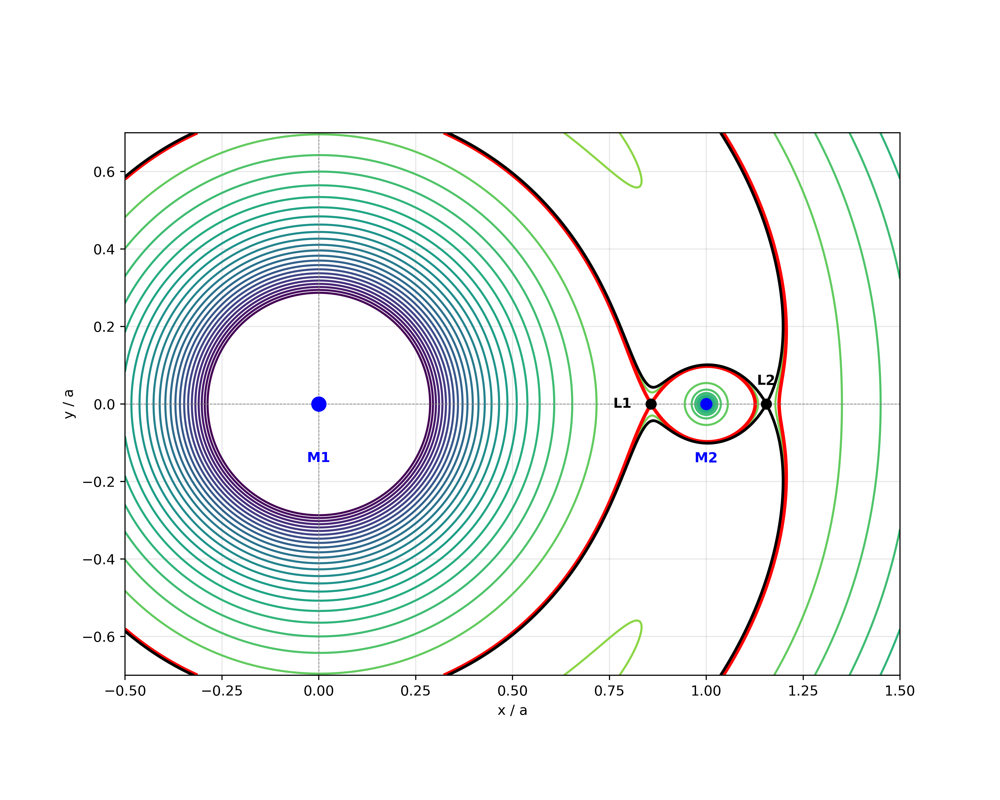
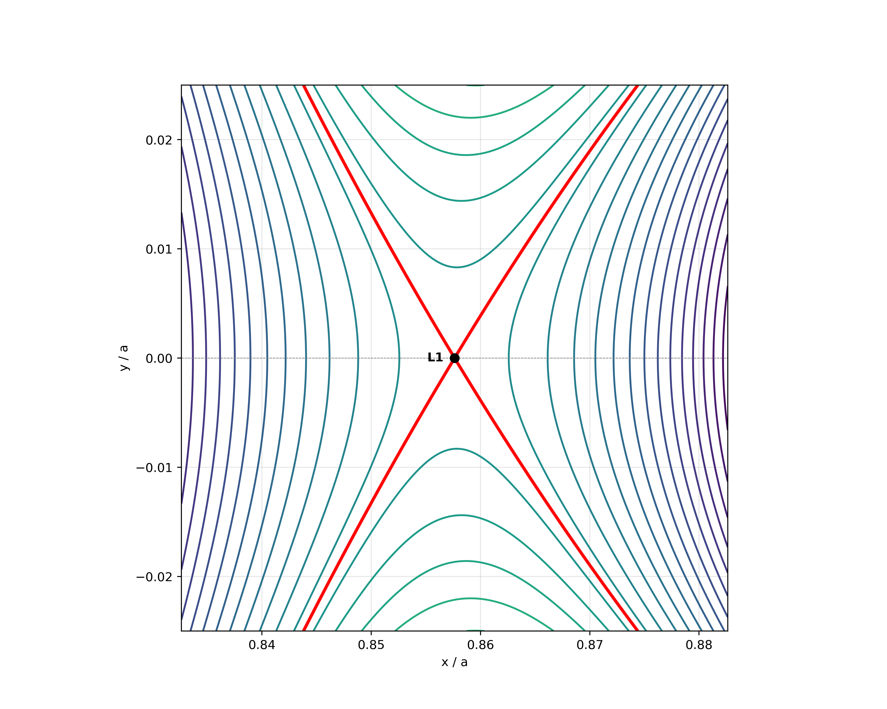
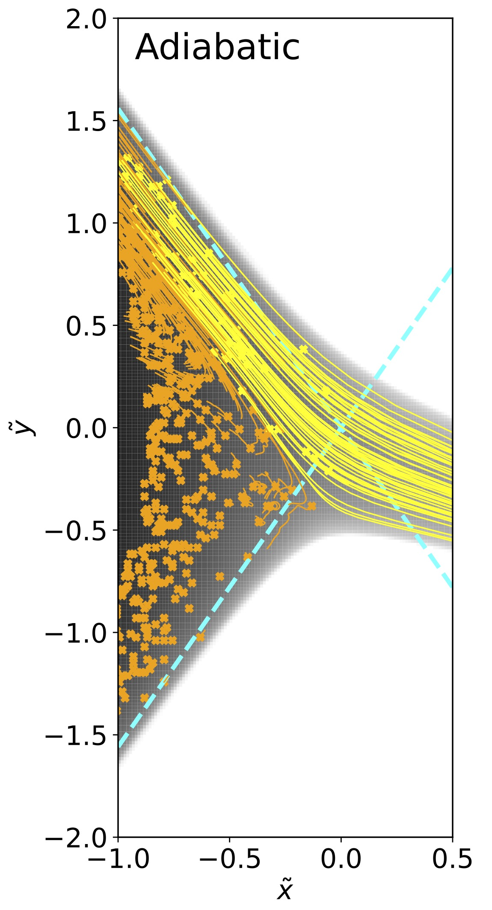
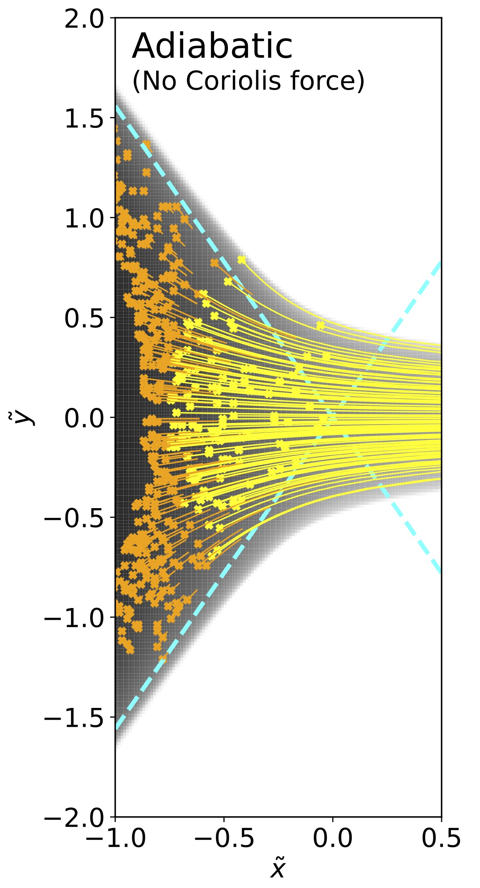
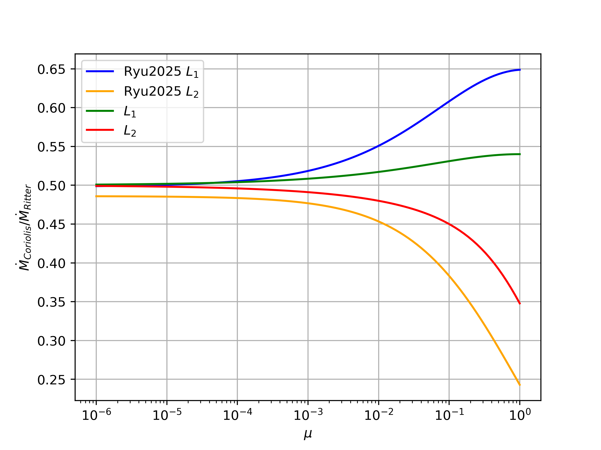
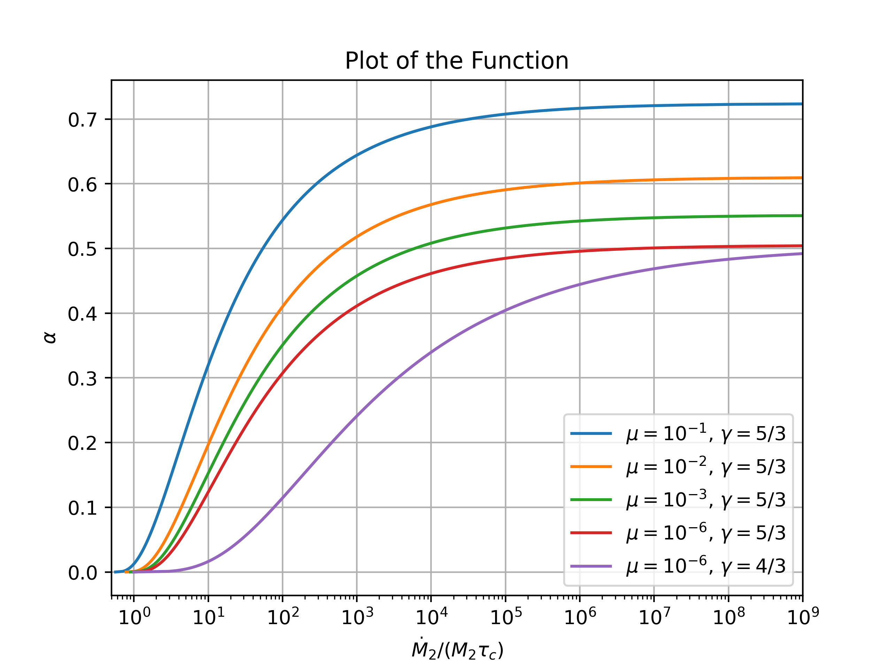

Mass Transfer in Close Binaries
Abstract
Mass transfer in close binaries is commonly modeled as an isentropic outflow through the first Lagrange point ($L_1$), yet under sufficiently rapid overflow material can also escape through the outer Lagrange point ($L_2$), carrying angular momentum away from the system. In this thesis, carried out in parallel with 3D hydrodynamical simulations, we develop an analytic, hydrodynamically motivated framework for quantifying the mass-loss rate through the Lagrange point region (LPR) and for predicting the fraction of the total outflow that is ejected via $L_2$. Binary star systems, which constitute approximately half of all observed stellar configurations, are fundamental to modern astrophysics.
1. Introduction
It all starts with two objects $M_1$ and $M_2$ orbiting each other. In this work we focus on cases with constant angular velocity (circular orbit) $\Omega=\sqrt{G(M_1+M_2)/a^3}$, where $a$ is the separation distance between the masses. By approximating them as point masses and preforming a coordinate transformation to a co-rotating frame where both masses lay on the $\hat{x}$ axis, we obtain that in the co-rotating frame a test particle moves under an effective potential and a coriolis force (Roche 1873):
$$ \begin{equation} \ddot{\vec{r}} =-\vec{\nabla} \phi - 2(\Omega \hat{z}) \times \dot{\vec{r}} \end{equation} $$where the effective potential
$$ \begin{equation} \label{eq:pot}\phi(\vec{r}) = -\frac{G \left( M_1 + M_2 \right)}{a}\left( \frac{1-\mu}{\left|\vec{r}/a\right|} + \frac{\mu}{\left|\vec{r}/a-\hat{x}\right|} + \frac{1}{2}\left( \vec{r}/a - \mu \hat{x} \right)^2 \right) \end{equation} $$Where $\mu = M_2/(M_1 + M_2)$. The first two terms in the effective potential are the standard gravitational potential and the centrifugal potential. This sets the stage for computing trajectory of a test particle in the two body system, known as the planar circular restricted three body problem (CR3BP). The Coriolis force does not exert any work, so the mechanical energy of a test particle is conserved as a sum of it's kinetic energy and his negligible mass times the effective potential \ref{eq:pot}. This is known as the Jacobi integral (Jacobi 1836), which is a conserved quantity arising from the symmetry of rotation and simultaneous translation in time.
$$ \begin{equation} \phi(r) + \frac{1}{2}\dot{r}^2 = C_J, \quad \frac{d C_J}{dt} = 0 \end{equation} $$In figure \ref{fig:Roche_pot} equi-potential lines of \ref{eq:pot} are plotted in the $X,Y$ plane. A test particle with Jacobi integral $C_J$ cannot ever cross the equi-potential line associated with potential $\phi(r) = C_J$. This defines regions where the particle is ``imprisoned''. Around every point mass $M_i$ there are regions that enclose only $M_i$ and not the other mass, The largest region that encloses only one mass point is defined as the Roche lobe (RL) of that mass. We model a binary system as two point masses orbiting one another at a constant angular velocity with an effective potential \ref{eq:pot}. This is an approximation as it treats the star as a point mass, for a test particle outside the star it is negligible as the majority of the star's mass is located deep where $\phi(r)$ is approximately spherical. A star can expand beyond his RL either by shrinking the separation distance $a$, or by self evolution of the star that extends radius. Once the RL overfills (RLOF) mass from the star is no longer bound to the star and can ``escape" to other regions (Kuiper 1941), notably to the other RL. When such a process occurs we refer to it as a mass transfer (MT) from a ``donor" star to an ``accretor" star, where the accretor is denoted as $M_2$ and the donor $M_1$.
The RL of $M_1$ and the RL of $M_2$ are two distinct regions yet they share a common point, this point is a saddle point of the effective potential (\ref{eq:pot}) and is referred as the first Lagrange point ($L_1$) (Euler 1767) (Lagrange 1772). Under MT mass flows between objects near $L_1$.
In certain scenarios that will be discussed further, mass can escape the RL outwards into the third region, which is the region unbound to any of the stars, when in such a scenario mass flows near another saddle point denoted as the second Lagrange point ($L_2$). It is important to note we are discussing the RL of the donor, as in some other works the notation of $L_2$ is to the outer Lagrange point of the accretor.

Historically, MT was first proposed by Struve (1941). While observing the binary system $\beta$ Lyrae, he saw a spectral signature of hot free gas in the system that did not line up with the expected spectra of two stars orbiting one another. This finding led him to first propose the idea of MT in binaries. If the accretor does not fill it's RL then the system is referred to as a semi-detaced binary. In such systems mass flows from the donor and forms an accretion disk in the accretor's RL. As the flow is inspiraling around the accretor, it loses angular momentum and emits radiation that can be observed. The emitted radiation has a unique spectral signature depending on the accretion disk properties. The first extra-terrestrial X-ray ever observed (Giacconi 1962) is a X-ray emitting binary accretion disk. In this work, we analyze the mass-loss rate ($\dot{M}$) of the donor. Nariai (1967) proposed modeling the flow through the $L_1$ Lagrange point as a de Laval nozzle (Landau & Lifshitz 1987), This led him to conclude that the velocity at $L_1$ reaches the speed of sound. This assumption was used by the astronomical community to study MT (Paczyński 1971). Lubow & Shu (1975) elaborated on this foundation with a more precise hydrodynamic treatment of the $L_1$ region. They computed the influence of the Coriolis force on the ejected stream and used analytical arguments to determine the stream's ejection angle. Later, Ritter (1988) synthesized their work and Paczyński & Sienkiewicz (1972) into a unified formula for mass loss. Historically, less attention has been paid to the possibility of matter escaping via the $L_2$ Lagrange point. Kuiper (1941) initially raised this possibility, particularly in binaries with a shared envelope. Shu et al. (1979) revisited $L_2$ mass transfer for shared envelope systems, demonstrating that for certain mass ratios, the ejected material is unbound and can escape the binary. More recently, Linial & Sari (2017) showed that stable, semi-detached (not shared envelope) $L_2$ MT can occur in extreme mass-ratio systems, such as those involving a supermassive black hole (SMBH), where GW radiation drives MT. In this work, we present a quantitative formula for computing the ratio of mass ejected from $L_2$ in the cases discussed in Linial & Sari (2017). This study was carried out in collaboration with Ryu et al. (2025), where we constructed a scaled 3D hydrodynamical simulation that improved our understanding of the flow in the Lagrange point region. We present the results of our simulations and compare them to our analytical conclusions, a detailed technical explanation of the simulations is given in Ryu et al. (2025).
The structure of this theses is as follows:
- Chapter 2: Presents an overview of the established potential framework utilized in this work.
- Chapter 3: Describes our hydrodynamical framework developed for analyzing the Lagrange point region.
- Chapter 4: Derives an upper bound for the mass loss, demonstrating its equivalence to the assumption of a sonic flow in the Lagrange point region.
- Chapter 5: Applies the hydrodynamical results to analyze the mass ejection ratio between $L_1$ and $L_2$.
Note on Prior Work: Two weeks before submission, we became aware of an unpublished 1969 M.Sc. thesis by Jedrzejec. Although he refused to publish it, his advisor, Paczynski, included it as an appendix in his 1972 paper Paczyński & Sienkiewicz (1972). In this thesis, Jedrzejec derives the known mass-loss formula as the maximal flow, which is nearly identical to our own derivation sections 2 and 3.
2. Lagrange Point Region
As mentioned, the Lagrange points play an important role in MT, understanding them and the potential geometry around them is crucial to understanding the flow. In the co-rotating frame these two points lie on the $\hat{x}$ axis on opposing sides of the donor and can be approximated as (Murray & Dermott 1999) -
$$ \begin{align} \label{eq:LP_approx} L_1 &= a \left[ 1 - \left( \frac{\mu}{3} \right)^{1/3} + \frac{1}{3}\left( \frac{\mu}{3}\right)^{2/3} + O\left(\mu\right)\right] \hat{x}\\ L_2 &= a \left[ 1 + \left( \frac{\mu}{3} \right)^{1/3} + \frac{1}{3}\left( \frac{\mu}{3}\right)^{2/3} + O\left(\mu\right)\right] \hat{x} \end{align} $$To further analyze the potential around these points, we adopt a local coordinate system centered at $L_i$ ($i=1,2$). Since the potential gradient vanishes at these points ($\nabla \phi_{L_i} = 0$), the effective potential can be expanded to quadratic order in the local coordinate system as (Nariai 1967):
$$ \begin{equation} \label{eq:LPR_pot}\phi(x,y,z) \approx \phi_{L_i} - \frac{1}{2} \Omega^2 \left( A_i x^2 + B_i y^2 + C_i z^2 \right) \end{equation} $$
The dimensionless coefficients $A_i, B_i,$ and $C_i$ characterize the local geometry of the potential around $L_i$. These coefficients are determined solely by the mass ratio $\mu$ and can be expressed as functions of one another (Lubow & Shu 1975).
$$ \begin{equation} \label{eq:C} C_i = B_i + 1 = -\frac{A_i + 1}{2} = \frac{1-\mu}{|L_i/a|^3} + \frac{\mu}{|L_i/a - \hat{x}|^3} \end{equation} $$This quadratic approximation remains valid within the neighborhood of the saddle point on a scale comparable to that of the smaller Roche lobe. Hereafter, we define this domain as the Lagrange Point Region (LPR).
3. Hydrodynamics of the Lagrange point region
In the previous chapter we have established an effective potential in the LPR, in this section we analyze the hydrodynamics of the flow in the LPR under that potential.
In our treatment, we make the following assumptions -
- Adiabatic process: Within the LPR, we treat the flow as isentropic, characterized by an adiabatic EOS: $$ \begin{equation} \label{eq:EOS} P = K \rho^\gamma \end{equation} $$
- Inviscid flow: As in many similar astrophysical scenarios the Reynolds number in the LPR is high, so viscosity can be neglected.
- Time-independent: On timescales comparable to the orbital period, the flow relaxes toward a steady state $\partial \mathbf{v}/\partial t = \partial \rho/\partial t = 0$. We observed This behavior in simulations of the just the LPR (Ryu et al. 2025).
- Hydrostatic boundary: The majority of the star is in hydrostatic equilibrium, so we assume that the flow originates from a hydrostatic profile where velocity can be neglected $\left|v\right| \ll c_s$.
The equations that describe the flow are the Euler equations for an adiabatic, inviscid, time-independent fluid:
$$ \begin{align} \label{eq:massConsrv}0 &= \nabla \cdot \left( \rho \vec{v} \right)\\ \label{eq:momentum}0 &= \left( \vec{v} \cdot \nabla \right) \vec{v} + \nabla \left( \phi + \frac{c_s^2}{\gamma - 1} \right) + 2 \vec{\Omega} \times \vec{v} \end{align} $$Taking the scalar product of Equation \ref{eq:momentum} with $\vec{v}$ along a streamline yields the Bernoulli equation:
$$ \begin{equation} \label{eq:Bernoulli}\frac{1}{2} v^2 + \phi + \frac{c_s^2}{\gamma - 1} = \phi_0 \end{equation} $$Where $\phi_0$ is an integration constant associated with the specific streamline. In the following section, we show that it is in fact a global integration constant that all streamlines share.
3.1. Global integration constant
Every streamline originated at the LPR boundary where a hydrostatic profile ($v \ll c_s$) is assumed, equation \ref{eq:momentum} becomes:
$$ \begin{equation} 0 = \nabla \left( \phi + \frac{c_s^2}{\gamma - 1} \right) \end{equation} $$and by inserting \ref{eq:Bernoulli} we arrive at $\nabla\phi_0 = 0$, which means that the integration constant is uniform for streamlines originating in the hydrostatic boundary. This motivates defining an overflow parameter: (Kitamura 1970)
$$ \begin{equation} \label{eq:D} D = \phi_0 - \phi_{L_1} \end{equation} $$This parameter $D$ serves as a foundational quantity for the analysis in the following chapters.
4. Maximal mass flow rate
As mentioned, in many previous works (Paczyński 1971) & (Lubow & Shu 1975) it is assumed that the flow becomes transonic in the vicinity of the Lagrange point. Ritter (1988) used this assumption to give an estimate of the total mass loss rate ($\dot{M_2}$). In this chapter we rigorously show that assuming that the flow becomes transonic at the vicinity of the Lagrange point is actually an upper bound of $\dot{M_2}$.
Deep inside the star where the flow originates it is subsonic, and after escaping the potential of $M_2$ it is under projectile considerations and thus transonic. Somewhere in between those two regimes every streamline has a sonic point, together they form a sonic surface, which Lubow & Shu (1975) showed has to be near the Lagrange point.
4.1. streamline
We first examine the 1D case of a given streamline with a Bernoulli constant $\phi_0$, Using Bernoulli's equation (\ref{eq:Bernoulli}) we can describe density as a function of velocity and potential:
$$ \begin{equation} \rho = \left[\frac{\gamma-1}{\gamma K}\left(\phi_0 - \phi - \frac{v^2}{2}\right)\right]^{\frac{1}{\gamma-1}} \end{equation} $$We can maximize the mass-flux $\rho v$ by differentiating $\frac{\partial \rho v}{\partial v} = 0`, finding that along a stream-line the maximum mass-flux is:
$$ \begin{equation} \label{eq:maxPointmassflux}\rho v \leq \left(K\gamma\right)^{-\frac{1}{\gamma-1}} \left(\eta - 1\right)^{1-\eta} \left(\phi_{0}-\phi\right)^{\eta - 1} \end{equation} $$where $\eta = \frac{3\gamma - 1}{2(\gamma - 1)}. The maximum of the LHS is reached by $\left|v\right| = c_s$, which means that assuming the outflow velocity is sonic is in fact assuming the maximal mass flux along every streamline.
4.2. 3D
Using the bound on mass flux in a stream-line we can now derive a bound on the total mass flux of the 3D case.
This is done by integrating over the surface $x = 0$:
For every point on the surface $x = 0$ the mass-flux $\rho |\vec{v}|$ is bounded by $\max (\rho |v|)$ from equation \ref{eq:maxPointmassflux}.
The bound of the total mass-loss rate:
\ref{eq:ritter} is exactly the same analytical result widely used from Ritter (1988). While running our simulations, this upper bound proved useful as a sanity check. As mentioned in Ryu et al. (2025), $\dot{M}_2$ in numerical simulations without Coriolis force is very close to this upper bound (about 95%).
4.3. Coriolis force
In simulations with Coriolis force, streamlines tend to bend and flow only from one side of the outer layer of the star, along the $0 = Ax^2 + By^2$ line.


we can approximate that all streamlines escape the surface $x = 0$ with the same velocity direction as they traveled with. adding this assumption to the total to the bound we derived is just multiplying by the factor of $\frac{1}{\sqrt{1 + \left|\frac{A}{B} \right|}}$, which by equation \ref{eq:C} gives us the final formula:
$$ \begin{equation} \dot{M}_{\rm L} \approx \left(\gamma K\right)^{-\frac{1}{\gamma-1}} \frac{\left(\eta - 1\right)^{1 - \eta} 2\pi}{\eta \Omega^2 C \sqrt{3}} D^\eta \label{eq:Mdot3D} \end{equation} $$As can be seen in figure \ref{fig:Mdot_comper_teaho} compering formula \ref{eq:Mdot3D} with our simulations Ryu et al. (2025), we find that it agrees well with the simulations, especially when $\mu \rightarrow 0$. From now on, equation \ref{eq:Mdot3D} is assumed as a good approximation and is used to analyze the mass flow.

5. $L_1$ vs $L_2
Different mechanisms can drive the donor to extend beyond it's RL, either an internal mechanism that increases the donor's radius by stellar evolution, or by external process that decreases the separation distance $a$.
In this chapter, we focus on mechanisms which decrease $a$, such as dynamical friction with surrounding gas, tides, and gravitational radiation. Each of these mechanisms draws energy from the orbital energy, and the donor is pulled towards the accretor to compensate. As $a$ decreases, the RL volume shrinks, the outer layers reach $L_1$ and MT starts.
If the accretor is compact then mass expelled from $L_1$ forms an accretion disk, and do to friction of the falling gas returns it's angular momentum to the donor. The donor has the same angular momentum but is less massive, so to compensate it retreats outwards to a larger $a$. Those two processes balance each other to a stable situation where the MT counteracts the external mechanism, it is referred to as a stable-MT. In a stable-MT the timescale of change in the separation distance is proportional to the MT timescale (Linial & Sari 2017):
5.1. Critical MT timescale
If the external mechanism is strong enough, in order to remain in a stable-MT the donor exceeds the RL so much that the outer layer reaches $L_2$. Using our previous work in chapter 4 we can find the critical MT timescale $\tau_c = \dot{M}_{L_1}/M$ required for the donor to reach $L_2$.
The polytropic constant $K$ from the adiabatic EOS \ref{eq:EOS} plays a major role in determining $\dot{M}$ however, we find it a quiet un-intuitive property as the units are $\gamma$-dependent. Therefore, we introduce a dimensionless parameter $\tilde{k}$ defined as the ratio between $K$ of the flow EOS, and $K_P$ the $K$ as if the whole star was adiabatic:
Where $N_\gamma$ is the numerical factor from Lane (1870) solution to a polytrope. $\tilde{k} = 1$ for an adiabatic star, and for a non-adiabatic stable star $\tilde{k}>1$.
In a critical MT the outflow parameter $D$ is exactly the potential difference $D=\Delta\phi$:
Here $\tilde{g}$ is the dimensionless version of $\Delta \phi$, which depends only on $\mu$.
Using these dimensionless parameters in equation \ref{eq:Mdot3D} we can express $\tau_c$ as a function of $\Omega$, $\gamma$, $\mu$, $\tilde{k}$: ( $\frac{a}{R_2}$, $\tilde{g}$, $C_1$ are functions of $\mu$)
If the mass ratio $\mu \ll 1$ is small enough, we can expand the parameters in $\mu$:
$$ \begin{align} \tilde{g}(\mu) &\approx \frac{2}{3} \mu\\ C_{1} \approx C_{2} &\approx 4\\ \frac{R_{RL}}{a}&\approx \left(\frac{\mu}{3}\right)^{1/3} \label{eq:roche_r} \end{align} $Assuming the donor's is about the size of the RL $R_2 \approx R_{RL}$:
$$ \begin{align} \tau_c &\approx \Omega \mu^{-\frac{\eta}{3}}k^{-\frac{1}{\gamma - 1}} A(\gamma) \label{eq:tau_small_mu}\\ A(\gamma) &= \frac{\pi\left(\gamma N_{n}\right)^{-\frac{1}{\gamma-1}}2^{\eta-1}3^{1-\frac{4}{3}\eta}}{\eta\left(\eta-1\right)^{\eta-1}} \end{align} $$5.2. $L_2$ leakage
In some scenarios the external mechanism shrinking $a$ is strong enough to overfill the RL in such a way that a non negligible of the MT happens via $L_2$. We use the following notation to describe the ratio:
$$ \begin{equation} \dot{M}_{L_2} = \alpha \dot{M}_{2,total} \end{equation} $$The overflow parameter for $L_1$ is $D$, for $L_2$ it is $D - \Delta\phi$. By writing equation \ref{eq:Mdot3D} for each of the Lagrange points and dividing them, we can relate a specific outflow parameter $D$ to a specific $\alpha$:
$$ \begin{equation} \label{eq:ratio} \frac{\alpha}{1-\alpha} = \frac{\dot{M}_{L_2}}{\dot{M}_{L_1}} = \left( 1 - \frac{\Delta \phi}{D} \right)^{\eta} \frac{C_1}{C_2} This enables us to relate $\alpha$ to the MT timescale without knowing the actual overflow $D$: $$ \begin{equation} \frac{\dot{M}_{2}}{M_{2}}= \tau_c \left(\left(1-\alpha\right)^{\frac{1}{\eta}}-\left(\alpha \frac{C_2}{C_1}\right)^{\frac{1}{\eta}}\right)^{-\eta} \label{eq:Mdot_timescale} \end{equation} $$A higher $\dot{M}_2/M_2$ will result in a larger $\alpha$. In figure \ref{fig:alpha_timescale} we figuratively show the relationship between $\alpha" and $\dot{M}/M" normalized to $\lim_{\mu \rightarrow0} (\tau_c)$.

Equation \ref{eq:Mdot_timescale} can help us produce an upper bound on $\alpha$, by requiring that it does not cross to an infinite $\dot{M}/M$:
$$ \begin{equation} \alpha < \frac{C_1}{C_1 + C_2} \end{equation} $$Taking $\mu \rightarrow 0$ and using \ref{eq:LP_approx} and \ref{eq:C}:
$$ \begin{equation} \alpha < \frac{1}{2} + \frac{3}{4} \left(\frac{\mu}{3}\right)^{1/3} + O(\mu^{\frac{2}{3}}) \end{equation} $$5.3. GW driven mass transfer in extreme mass ratio
Following Linial & Sari (2017) we use the conservation of angular momentum to relate the MT timescale to an external mechanism. Matter that escapes via $L_1$ forms an accretion disk and slowly falls inward by loosing angular momentum, due to conservation of angular momentum it deposits all of it's angular momentum back to the donor.
On the other hand, matter escaping from $L_2$ leaves and does not necessarily return it's angular momentum back to the orbit. We assume that matter escapes $L_2$ with the average angular momentum of the donor, and does not return it back to the orbit:
Let $\dot{J}_{ext}$ be some external mechanism of angular momentum loss that drives the MT, the total change in the orbital angular momentum $J_{orb}$ is:
$$ \begin{equation} \dot{J}_{orb} = \dot{J}_{L_2} + \dot{J}_{ext} \end{equation} $$As shown in detail in Linial & Sari (2017), assuming that the donor is roughly the size of the RL, when $\mu \ll 1$ using the expansion \ref{eq:roche_r}:
$$ \begin{equation} \frac{\dot{J}_{ext}}{J} = \frac{\dot{M}_2}{M_2} \left( \frac{5}{6} + \frac{\epsilon}{2} - \alpha \right) \label{eq:linial} \end{equation} $$Where $\epsilon" is the mass-radius index of the donor $\epsilon = \frac{d \log R_2}{d \log M_2} $.
Focusing on cases where the majority of angular momentum loss is driven by gravitational waves (GW) radiation, the angular momentum loss rate do to GW is given by (Peters & Mathews 1963):
$$ \begin{equation} \frac{\dot{J}_{GW}}{J} = \frac{32}{5}\left(\frac{\Omega a}{c}\right)^5\frac{\Omega}{\mu\left(1-\mu\right)} \end{equation} $$Where $c$ is the speed of light.
Finally, combining equations \ref{eq:GWloss}, \ref{eq:linial} and \ref{eq:Mdot_timescale} with $\mu \ll 1$, we obtain two equivalent useful relations for steady state GW driven mass transfer with $L_2$ mass loss -
$$ \begin{align} \frac{\frac{5}{6}+\frac{\epsilon}{2}-\alpha}{\left(\left(1-\alpha\right)^{\frac{1}{\eta}}-\alpha^{\frac{1}{\eta}}\right)^{\eta}}\frac{5}{32}\frac{A\left(\gamma\right)}{\tilde{k}^{\frac{1}{\gamma-1}}} &= \left(\frac{R_{S}}{a}\right)^{5/2}\mu^{\frac{\eta}{3}-1}2^{-5/2} \label{eq:schw_alpha}\\ &= \left(\frac{v_{esc}}{c}\right)^{5}\mu^{\frac{\eta}{3}-\frac{8}{3}}3^{-5/6} \label{eq:v_esc_alpha} \end{align} $$Where $R_s=\sqrt{2GM_1/c^2}$ is the Schwarzschild radius, and $v_{esc}=\sqrt{2GM_2/R_2}$ is the escape velocity from the donor surface.
If the RHS is smaller than the LHS when $\alpha = 0$, then no $L_2$ MT is happening, and these equations are not valid.
Equation \ref{eq:v_esc_alpha} is useful if one has a complete understanding of the donor as a star, but does not necessarily know where it is located with respect to the accretor. Knowing $\tilde{k}$, $\gamma$, $\mu$, and $v_{esc}$ we can calculate with high precision the $\alpha$ of stable-MT. It should be noted that if $\frac{v_{esc}}{c} \approx \mu^{\frac{1}{3}}$ then the separation distance $a$ is comparable to the Schwarzschild radius of the accretor and our Newtonian treatment is invalid.
Equation \ref{eq:schw_alpha} can prove useful if one tries to understand $\alpha$ at a specific separation distance $a$.
An interesting case is when $\gamma = 5/3$, the $\mu$ dependence of the equation drops, and we are left with the following:
This is an interesting result, as it predicts that for an adiabatic star $\tilde{k}=1$ with $\gamma=5/3$, the $\tau_{c}$ of GW induced MT happens exactly at $a \approx 3.2 R_s$. This means that for polytropes of $\gamma = 5/3$ which are fairly common, GW induced MT from $L_2$ occurs only in the relativistic regime where we cannot grant our Newtonian treatment to be valid.
In-order to have significant $L_2$ MT from GW, either the adiabatic index has to be smaller $\gamma < 5/3$, or not an adiabatic star and the entropy profile will be non-uniform $k>1$.
6. Discussion
6.1. Stellar evolution models
We derived a formula for computing the ratio of material ejected from the Lagrange point only as a function of the mass ratio $\mu$ and the star's properties $\gamma , k , v_{esc}$. In order to give real world predictions we need to calculate these quantities for stars undergoing MT. Recently much work is being done with evolutionary models such as MESA to better understand star evolution under MT.
6.2. Eccentric orbits
Our whole analysis was based on the assumption of a circular orbit, which is often an oversimplification of the true physical scenario. Eccentric mass transfer (EMT) is a much more complex phenomenon, primarily because it is challenging to derive an effective potential in a time-dependent system. Sepinsky et al. (2007) proposed an analytic framework to address the effective potential in eccentric systems. His work showed that, for certain eccentricities, the potential difference between $L_1$ and $L_2$ (which we denote as $\Delta\phi$) could become negative at the perihelion. This observation suggests, counterintuitively, that MT originating from $L_2$ might potentially be more significant than that from $L_1$. More recently, Parkosidis et al. (2025) provided a comprehensive analysis of EMT, using Sepinsky’s analytical framework and introducing the possibility of mass transfer originating from $L_3$ (which they label as $L_2$). Beyond the complication of determining the effective potential, the periodic nature of EMT further compounds the problem. As we observed in our simulations (Ryu et al. 2025), the flow relaxes on the timescale of the orbital period, which means that a time-independent solution can no longer be assumed.
6.3. Ejecta dynamics
After matter is expelled via $L_2$ what happens to it? Shu et al. (1979) showed that in common envelope scenarios, $L_2$ ejecta can escape the system. After establishing that $L_2$ MT is possible and can be comparable to $L_1$ MT in semi-detached systems, it remains to understand what happens to the ejected material.
7. Summary
This thesis studies mass transfer (MT) in semi-detached binaries in the circular restricted three-body problem framework. Starting by setting the stage for our analysis, first by moving to the co-rotating frame where the Jacobi constant can be used as an effective potential (\ref{eq:pot}). To better understand what is happening near the first and second Lagrange points, we expanded the effective potential to a quadratic order around them (\ref{eq:LPR_pot}). This approximation is valid on the scale of the donor's radius and was used in this work analytical analysis, and in our simulations in Ryu et al. (2025). We consider the flow at Lagrange points as an inviscid adiabatic flow with EOS: $P=K\rho^\gamma$. Following observations from our simulations, we assume that the flow relaxes to a steady state at the timescale of the orbital period, which led us to the stationary Euler equations in the co-rotating frame. By projecting the momentum equation along a streamline, we obtained a Bernoulli integral for each. Taking the assumption that each streamline originated deep in the star where a hydrostatic profile is assumed ($|v| \ll c_s$), we concluded that all streamlines share the same Bernoulli constant $\phi_0$. This led us to define an overfilling parameter $D=\phi_0 - \phi_{L_1}$ that plays a critical role in the MT rate. We demonstrated that, for a fixed Bernoulli constant, the mass flux along any streamline is bounded above, with the maximum attained at a sonic point ($|v|=c_s$). Integrating this local bound over the $x=0$ cross-section yields an upper bound on the total mass-loss rate that reproduces the widely used transonic estimate associated with Ritter (1988). We then incorporated the leading effect of the Coriolis force as a geometric reduction factor, arriving at a practical analytic expression for $\dot{M}$ that is consistent with the behavior observed in our scaled 3D simulations. We applied the maximal-flow result to determine when the donor overfill is large enough for the $L_2$ channel to open, identifying the critical condition $D=\phi_{L_1}-\phi_{L_2}$ and expressing the associated critical MT timescale $\tau_c$ in terms of $\Omega$, $\gamma$, $\mu$, and a dimensionless entropy parameter $\tilde{k}$. Writing the mass-loss formula separately for $L_1$ and $L_2$ and dividing them yields a direct relation between the $L_2$ mass fraction $\alpha$ and the driving MT timescale, allowing one to infer $\alpha$ without explicit knowledge of the overflow $D$. Finally, specializing to gravitational-wave-driven MT in the extreme mass-ratio limit provides compact relations that connect $\alpha$ to the donor structure and to the binary separation, and clarifies when significant $L_2$ leakage is expected within the domain of validity of the Newtonian treatment.
References
Euler, L. (1767). De motu rectilineo trium corporum se mutuo attrahentium. Novi Commentarii academiae scientiarum Petropolitanae, 11, 144-151.
Giacconi, R., Gursky, H., Paolini, F. R., & Rossi, B. B. (1962). Evidence for x Rays From Sources Outside the Solar System. Physical Review Letters, 9(11), 439-443.
Jacobi, C. G. J. (1836). Sur le mouvement d’un point et sur un cas particulier du problème des trois corps. C. R. Acad. Sci. Paris, 3, 59-61.
Kitamura, M. (1970). The geometry of the Roche coordinates. Astrophysics and Space Science, 7(2), 272-358.
Kuiper, G. P. (1941). On the Interpretation of $\beta$ Lyrae and Other Close Binaries. The Astrophysical Journal, 93, 133.
Lagrange, J.-L. (1772). Essai sur le problème des trois corps. Oeuvres de Lagrange, 6, 229-331.
Landau, L. D., & Lifshitz, E. M. (1987). Fluid Mechanics. Course of Theoretical Physics, vol 6 (2nd ed.). Butterworth-Heinemann, 361-363.
Lane, H. J. (1870). On the theoretical temperature of the Sun.... American Journal of Science, 50(148), 57-74.
Linial, I., & Sari, R. (2017). Mass-loss through the L2 Lagrange point - application to main-sequence EMRI. Monthly Notices of the Royal Astronomical Society, 469(2), 2441-2454.
Lubow, S. H., & Shu, F. H. (1975). Gas dynamics of semidetached binaries. The Astrophysical Journal, 198, 383-405.
Murray, C. D., & Dermott, S. F. (1999). Solar System Dynamics. Cambridge University Press.
Nariai, K. (1967). Mechanism of Mass Flow from Upsilon Sagittarii. Publications of the Astronomical Society of Japan, 19, 564-574.
Paczyński, B. (1971). Evolutionary Processes in Close Binary Systems. Annual Review of Astronomy and Astrophysics, 9, 183.
Paczyński, B., & Sienkiewicz, R. (1972). Evolution of Close Binaries VIII. Mass Exchange on the Dynamical Time Scale. Acta Astronomica, 22, 73-91.
Parkosidis, A., Toonen, S., Laplace, E., & Dosopoulou, F. (2025). Rethinking mass transfer: a unified semi-analytical framework for circular and eccentric binaries.II.... arXiv:2511.07190.
Peters, P. C., & Mathews, J. (1963). Gravitational Radiation from Point Masses in a Keplerian Orbit. Physical Review, 131(1), 435-440.
Ritter, H. (1988). Turning on and off mass transfer in cataclysmic binaries. Astronomy and Astrophysics, 202, 93-100.
Roche, E. (1873). Mem. Acad. Sci. Montpellier, 8(1), 235.
Ryu, T., Sari, R., de Mink, S. E., David, O., Valli, R., Ma, J.-Z., Justham, S., Pakmor, R., & Ritter, H. (2025). Binary mass transfer in 3D: Mass transfer rate and morphology. Astronomy & Astrophysics, 702, A61.
Sepinsky, J. F., Willems, B., & Kalogera, V. (2007). Equipotential Surfaces and Lagrangian Points in Nonsynchronous, Eccentric Binary and Planetary Systems. The Astrophysical Journal, 660(2), 1624-1635.
Shu, F. H., Anderson, L., & Lubow, S. H. (1979). On the structure of contact binaries. III - Mass and energy flow. The Astrophysical Journal, 229, 223.
Struve, O. (1941). The Spectrum of $\beta$ Lyrae. The Astrophysical Journal, 93, 104.